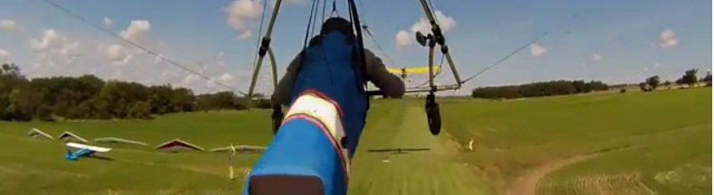

SOUTHWESTERN ONTARIO GLIDING ASSOCIATION


What is Aero-towing?
We use a custom-designed ultra-light aircraft called a Dragonfly to tow our wings aloft at the end of a 200 foot rope. Take-off is facilitated by starting on a 3-wheeled launch cart. Once flying speed is achieved, the launch cart is released and the glider takes to the air. The big advantage of aero-towing is that the tug pilot can look for clouds and drop you off at 2000 feet, right smack dab in the middle of a thermal. Awesome! Aero-towing is a mature process with a proven safety record.
Aerotowing is more flexible than any other form of launching. We can adjust for any wind direction. The tug pilot can take you to the lift, wherever it is. You can opt for a higher tow if desired. If you don't sky-out the first time, you always get a second chance. SOGA, in conjuction with Instinct Windsports, offers an aerotow training course. As a qualified hang glider pilot, you can Contact Us and sign up.

Southwestern Ontario Gliding Association is a not-for-profit corporation registered in the province of Ontario, Canada